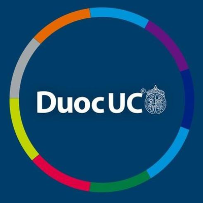

<ion-header>
  <ion-toolbar>
    <ion-title class="ion-text-center">Recuperar contraseña</ion-title>
  </ion-toolbar>
</ion-header>

<ion-content class="background"  [fullscreen]="true"> 
 
 <ion-card   class="ion-text-center , mainCard , size">
  
   <h2>Ingresa tu usuario para que podamos ayudarte a recuperar tu contraseña</h2>
   <br><br><br>
   <label >nombre usuario </label>
   <input [(ngModel)]="usuario.nombreUsuario" class="placeHolder" type="text" placeholder="usuario">
   <ion-button class="btn_password" (click)="showPass()" expand="block" fill="clear" shape="round" style="--background: #F9B901; color:black">
     recuperar contraseña
   </ion-button>

 </ion-card>
 <ion-item lines="none" class="showPass" >
  <p class="center">tu contraseña</p>
</ion-item>

<ion-footer >
  <ion-toolbar >
    <ion-title class="ion-text-center" size="small" > <h4> Mesa central 800 600 600</h4></ion-title>
  </ion-toolbar>
</ion-footer>
</ion-content>


